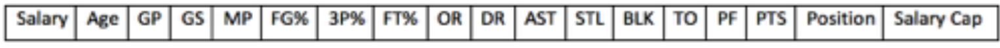
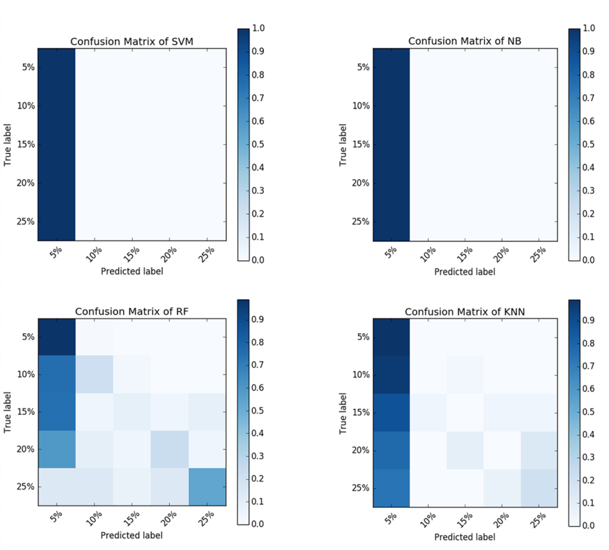

XINYU ZHANG
Email: xinyuzhang2016@u.northwestern.edu

CHENHUI ZHOU
Email: chenhuizhou2016@u.northwestern.edu
Email: xinyuzhang2016@u.northwestern.edu
Email: chenhuizhou2016@u.northwestern.edu
In our project, our task is to predict the salary of a certain NBA player in the coming season based on attributes of the player’s stats in the current season, such as accuracy, points per game and so on. More than making prediction, we are able to validate whether a player worth for his salary, or whether a player should get more. The salaries problem is always a popular topic with heated discussion. In NBA history there are several lookout because of salaries problem. If we could evaluate a player's value and predict it for every team it may eliminate the conflict between players and team owners. Also every team could spend useful money to built stronger team. Finally our project may let NBA games be more competive and attractive.
At first we process our data we get from internet, we combine different tables together and determine the feature is nominal or numeric. For features whose values are not numeric and not easy for the algorithm to understand. For example, “Position”, we can use numeric to substitute for the original value, so that "SF" will be -2, "PG" will be -1, "C" will be 0, and so on.
In order to generate the ML models, we use python package Scikit-Learn trying Random Forest Algorithm, Support Vector Machine, k Nearest Neighbors, Bernoulli Naive Bayes Algorithm, and AdaBoost Algorithm to train the data.
At the very beginning, we tried to use regression model to do the task, since we thought that predicting salary should output continuous value rather than a certain class. But after tried some algorithms, we found that the performance of the regression model was very awful due to the very high dimension of the input. So that we decided to transfer this regression task to classification task by category the salary to percentage format. For example, in a certain sample, the salary attribute has value as 12,000,000 and the salary cap attribute has value as 60,000,000, then the label of this sample will be 0.20. So that our model is going to predict a approximate salary among a range.
We extract part of the data from our whole dataset and keep this part of data for testing. For validating different models’ performances, we implement cross-validation and look at their scores of accuracy and confusion matrix. And later we use our testing data to further evaluate our model by calculating the differences between the salaries predicted by our model with the salaries labeled as ground truth. If the differences is small, it means our model is successful. Up to now, we have a preliminary model for our task.
For the data we extract several CSV files from BASKETBALL and ESPN/NBA. Using 25 teams hundreds players’ specific state data from 2011-12 season to 2015-16 season associate with salary data we manually combine the data to the following format:  There are 16 attributes. Attribute ‘Position’ is nominal, other attributes are all numerical. We use attribute ‘Salary’(player’s salary for next season) and attribute ‘SalaryCap’(The salary cap for next season) for labeling, we divide ‘Salary’ by ‘SalaryCap’ and categorize the results ranging from 5% to 30%(due to NBA salary cap) into 6 classes. If Every 5% count as one class. If the salary is smaller than 5% we let it belong to 5% and if the salary is bigger than 30% we set it 30%.
As the histogram shown above, the accuracy for each algorithm increases after merging label. Before merging, there are 8 classes for our data, 0%, 5%, 10%, 15%, 20%, 25%, 30%, 35%, and the accuracy for each algorithm is not so good. After analyzing, we found this is due to that players in 0% and 5% have very similar performance, and players above 20% also have very similar performance. So it's very hard to classify such classes. To address this problem, we merged all players under 10% to 5% and all players above 20% to 25%. According to the result shown in the histogram, this solution gives a much better result. And among all the algorithms, Random Forest Algorithm performs the best. So we finally use Random Forest model to make predictions.
The figure Above shows the confusion matrix for each algorithm, we can see that SVM and Naive Bayes classify each sample to 5%, while kNN and Random Forest do a pretty good job.
Also, we use data in 2016 for testing, the testing accuracy of our Random Forest Algorithm is 81%.